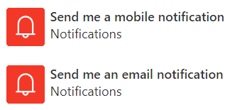
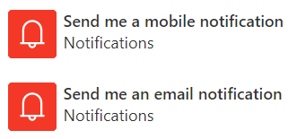

Hi, I'm Ben.

Configuring Push Notifications for Dynamics 365
Loading...
Slides available at:

I am a solution architect at KPMG MBS. This is only my 3rd user group, so be nice to me.
Today we're going to talk about cool stuff, how we make cool stuff and how you can have the cool stuff, for free. üòé
The Problem:
How do we alert our users that stuff that is important to them has happened, so they can
take action?
Image: firemeibegyou.com
But but, flow does this?


The Rules:
- Notifications must be timely and straight to the user
- Sending notifications configurable by a "super user"
- Users can opt-in or out
- Notifications must provide context, be targeted, with a relevant action
But what about my Mum?
She loves to share kitten gifs on Facebook, I get them all the time!
üê±üê±üê±
She loves to share kitten gifs on Facebook, I get them all the time!
üê±üê±üê±
Exactly! There is a better way
We can use the Push API...
..and a service worker.
..and a service worker.
You rang, sir?
Image: Unknown from pixelartmaker.com
So how does this all work?


> npm install -g @angular/cli
> ng new push-notifications
> npm install -save firebase
Whoa whoa whoa! Aren't we supposed to use React?
Well, yeah....but...
Notification.requestPermission().then((permission) => {
if (permission === 'granted') {
messaging.getToken()
.then((currentToken) => {
// Do Dynamics Magic
})
.catch((err) => {
// Oops
});
}
else {
// Bigger Oops
}
});
OK, so we use grab the token...
But where do we store it?
But where do we store it?
In CDS of course!
Once we've got in CDS...
We can do whatever we want with it! ü§ë
We can do whatever we want with it! ü§ë
Try it in Forms Pro:
OK, so I've seen this work in Edge on Windows...
Does it work on a Mac?
Does it work on a Mac?
Yup! Chrome and Safari support it.
...it doesn't work in iOS Safari, but Chrome on Android....
...it doesn't work in iOS Safari, but Chrome on Android....
....IE?
ü§£
No.
Isn't this just the same as
D365 Notify?
D365 Notify?
Uhm, yeah. I probably should've checked that.
Hmm, JavaScript Frameworks, Google APIs...
Surely this thing writes itself?
Surely this thing writes itself?
Actually it was more difficult than you would think.
The Challenges:
- Modern PWAs really really want your app to be hosted at the root
- Modern PWAs want to use lazy module loading and bundle hashes
- Firebase wants to know settings at compile time
- Custom flow connectors, enough said
Yeah yeah, but now you've solved those....
It's perfect, right?
It's perfect, right?
Well, one thing about the Firebase
FCM:
- Uses a service worker to deal with background notifications
- Offers a rich client API for foreground notifications
- Best practice in PWA says that you would handle foreground messages differently to background
Can I have it?
I want to use it today because it's so awesome.
I want to use it today because it's so awesome.
Yep, it's just a solution.
Managed, of course.
Managed, of course.
You'll need to create a Firebase account,
and enter some details.
and enter some details.
Hi!
I want to contribute because I'm really nice.
I want to contribute because I'm really nice.
Next Steps:
- Port to React and Office UI Fabric, any takers?
- Sample code for use in Plugins
- Better theming
- Better (read: any) tests and documentation
- Portals?
- Microsoft to make this all obsolete and put it in the platform
With Thanks: